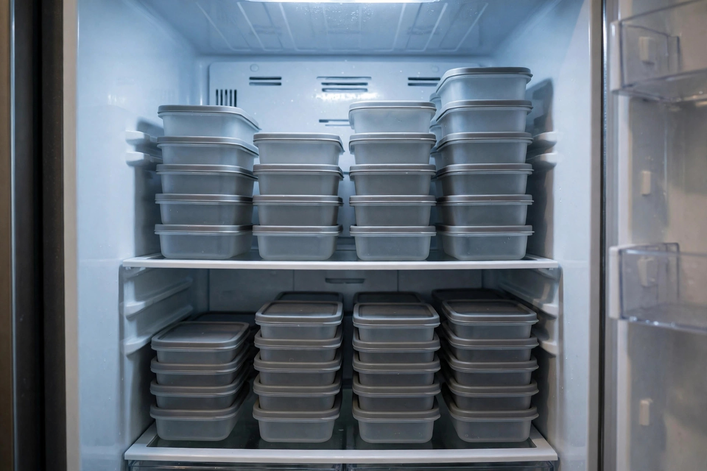

Evening Meal Prep for Busy Neighbours: Pricing, Food Safety, and Honest Margins
Yes, neighbours will pay for weeknight dinners they did not have to cook. No, in Ontario those dinners cannot legally be cooked in your home kitchen and sold. That second sentence decides the whole business model, so it comes first: the evening version of meal prep that works is cooking in the client's own kitchen as a personal chef, or renting time in an inspected commercial kitchen. Everything below, the pricing, the safety routine, and the margins, is built on one of those two routes.
The opportunity in one paragraph
The customer is a busy household on your own street or the next one over: two working adults, kids with evening activities, and a fridge full of ingredients nobody has the energy to turn into dinner. They are not buying cuisine. They are buying back the hour between getting home and eating, plus the planning and the cleanup. One household, one evening a week, a fridge stocked with labelled dinners for the nights ahead. That is the whole offer, and its smallness is the point: it fits after a day job because it is capped by design at one kitchen per evening.
The Ontario rule that picks your model
Ontario permits home-based food businesses, but only for low-risk foods. Northeastern Public Health's guidance for home-based food businesses is explicit: only low-risk items may be prepared in a residential kitchen, with examples such as breads, most baked goods without custard, pickles, jams, and granola (s1, checked 2026-11-12). Potentially hazardous foods are not permitted, and the examples given include meats and foods containing meat, cooked rice and pasta, and dairy-based desserts (s1). A chicken dinner with rice is, by that list, exactly what a home kitchen may not sell.
The wider frame matches. York Region's food premises page confirms that the part of a home used to prepare food for sale is a food premises under Ontario's Food Premises Regulation, that anyone opening a home-based food business must notify Public Health before operating, and that the low-risk exemptions from handwashing station, commercial dishwashing, and food handler certification rules apply only to businesses preparing low-risk foods (s2, checked 2026-11-12). Food service premises that go beyond low-risk foods must have at least one certified food handler onsite at all times (s2). The federal small business guide to starting a food business in Ontario repeats the same low-risk list and the same three exemptions, sourced to the Ontario Ministry of Health (s3, checked 2026-11-12).
So the routes narrow to two. Route one: cook in the client's kitchen with the client's groceries, the personal chef model, where the food never leaves their home (s5). Route two: rent time in a licensed commercial or commissary kitchen, one of the standard routes US guides describe for meal prep businesses (s6). Route one costs almost nothing to start and suits one household per evening. Route two adds a rent line you must quote before pricing anything, and it suits batch cooking for several households at once. Pick route one unless you already have the kitchen time priced in writing.

Food safety numbers that are not optional
Whichever route you take, the temperature rules are the same and they come from Health Canada: keep the refrigerator at 4°C or lower and the freezer at -18°C or lower, and treat the range between 4°C and 60°C as the danger zone where bacteria grow quickly (s4, checked 2026-11-12). Northeastern Public Health applies the same zone to home food work: potentially hazardous ingredients may sit outside it only for the time preparation actually needs, and never for more than two hours (s1).
Turn that into a working routine. A fridge thermometer lives in the client's fridge and in yours. Cooked food cools in shallow containers, not in the pot it cooked in, and goes into the fridge promptly. Every container gets a label with the dish, the date it was cooked, and reheating instructions. Allergies are asked about in writing before the first menu, not discovered at the stove. These steps are not decoration on the service. They are the service, because a single household made ill ends the business and possibly more than the business.
The honest math: one household, one evening
The pricing model worth copying comes from the personal chef world: charge a weekly service fee for your time and skill, and bill groceries separately at cost (s5, checked 2026-11-12). A published US guide prices dinners only, meaning 4 to 5 dinners for a family of four, at US$150 to US$250 per week plus groceries, and puts a dinner session at 4 to 5 hours start to finish (s5). Billing groceries separately matters more than it looks: when egg or chicken prices jump, the increase lands on the grocery bill the client already sees, not inside your fee, so your margin does not quietly shrink (s5).
Now work one evening as a labelled scenario. The fee, the small costs, and the off-stove hours below are scenario assumptions you set for your own street, not market prices. The session length is the sourced 4 to 5 hour range from s5. The arithmetic is shown so you can rerun it with your own numbers.
| Scenario line | Low | Expected | High |
|---|---|---|---|
| Weekly service fee per household (your price, scenario) | $150 | $200 | $250 |
| Groceries | Billed separately at cost, $0 margin, all three scenarios | ||
| Your costs: labels and containers $6, travel $10 (scenario) | $16 | $16 | $16 |
| Contribution after costs | $134 | $184 | $234 |
| Total time: cooking session plus planning, shopping, messages (scenario) | 6.5 hours | 6 hours | 5.5 hours |
| Effective hourly rate, contribution divided by total time | About $20.62 | About $30.67 | About $42.55 |
Read the table the Sterling way. The fee is not the wage. The low scenario pays about $20.62 an hour because the session ran long and the planning hour was real. The high scenario pays about $42.55 because the menu repeated, the shopping list wrote itself, and the session tightened to the sourced range's middle. Same cook, same street, double the hourly result, and the difference is repetition, not talent. Two households a week at the expected line is about $368 of weekly contribution before tax, and it costs two evenings. That is the honest size of this hustle at neighbour scale.
Two pricing models, one table
| Decision point | Service fee, groceries separate | Per meal, all-in price |
|---|---|---|
| Who carries grocery price increases | The client, on a bill they can see | You, inside a fixed price, until you raise it |
| What the client compares you against | Other services and their own time | Takeout and grocery store meals, meal by meal |
| Your admin per week | One fee, one grocery receipt to pass through | Costing every dish, every week, as prices move |
| Where the margin hides | In your session speed, which improves with repetition | In ingredient buying, which punishes small orders |
For an evening operator cooking one household at a time, the service fee model wins on every row that matters. All-in per meal pricing suits a commercial kitchen cooking fifty identical trays, where ingredient buying at volume is the business. That is a different business from the one described here.
Startup runbook, in order
- Call your local public health unit before anything else. Say exactly what you plan to cook and where you plan to cook it, and take notes. In Ontario, notification before operating is required for a home-based food business (s2), and the same conversation confirms which route your model needs.
- Get certified anyway. An Ontario food handler course from a recognized provider costs $49.95 online (price checked 2026-11-12) and the certificate is valid for five years. Beyond low-risk foods, certification is a requirement for a food service premises (s2); at client kitchen scale it is also the cheapest trust signal you will ever buy.
- Choose route one and write the agreement. One page: the weekly service fee, groceries billed at cost with receipts, the cooking day, cancellation terms, allergy information, and kitchen access. The US personal chef guide builds its whole setup on the same service agreement basics (s5).
- Price insurance before the first client, not after. US guides put personal chef startup at US$450 to US$1,000 including the first year of insurance (s5). Treat that as a prompt to get a Canadian quote, not as your budget.
- Build a small rotating menu. Four to six dinners that reheat well, that you can cook without thinking, and that share ingredients. Repetition is where the high scenario in the table comes from.
- Start with two households, one evening each. Neighbours first, because travel time is margin. Track every hour for the first six weeks: planning, shopping, cooking, cleanup, messages, driving.
- Report the income. In Canada this is business income from the first dollar, reported on Form T2125 with your T1 return, and the $30,000 figure people quote is the GST/HST registration threshold, not an exemption from income tax (s7, checked 2026-11-12).
What success looks like: by week six you can state your effective hourly rate from your own tracked evenings, both households have rebooked without being chased, every container leaves labelled with a date and reheating instructions, and your fridge thermometer readings are a habit rather than a performance.
Risks, and who should not do this
Skip this hustle if you cannot get a straight answer from your health unit about your model, because cooking first and asking later risks a shutdown order and a reputation on your own street. Skip it if you dislike cooking the same dishes repeatedly, because the margin lives in repetition. Skip it if an allergy heavy household wants guarantees you cannot honestly give, and skip it if your day job contract restricts outside work, which is worth checking before the first dollar rather than after.
The standing risks are food safety, liability, and creep. Food safety is managed with the temperatures and the two hour limit above. Liability is managed with insurance and a written agreement. Creep is the quiet one: the extra side dish, the dessert, the grocery run for items outside the menu. Each favour is unpaid time, and unpaid time is what turns the expected scenario into the low one.
The kill criterion
Set the line before the first client. Run six weeks, two households where you can get them, with every hour tracked. Continue only if your effective hourly rate, calculated the way the table calculates it, clears the floor you would accept from any other evening work, and if at least one household has settled into a standing weekly booking. If the rate sits below your floor after six weeks of repetition, or if every client treats the service as a one-off treat rather than a weekly habit, stop, and keep the certificate and the skills for a different food idea. An evening spent cooking for neighbours at below floor money is volunteering with extra dishes.
— Sterling Cole, Money Writer — Earning Desk